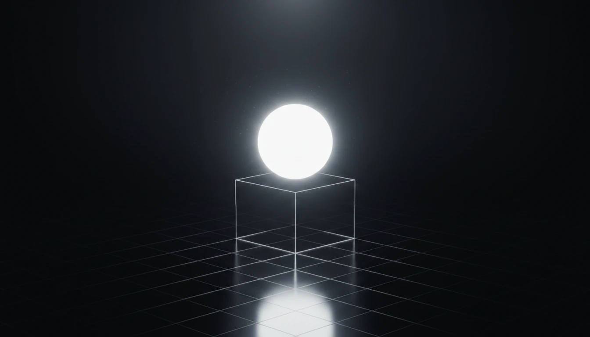

light-runner
Spawn one container, return exit code and files.
The execution primitive. Domain-agnostic. Zero orchestration. The other two tools in this family both call down to this one.
Stable - v0.8.0
A single-purpose Node.js library that runs your code in a container it tears down afterwards, and hands you back the exit code, logs, and any files you asked for. Nothing else.

Every run gets a fresh container, its own volume, its own network. Nothing leaks in from the host, nothing leaks out to sibling runs. Torn down on exit - success or not.
Point at a directory on your disk, it becomes the container's workdir. When the run finishes, ask for any path - a report, a binary, a whole build tree - and it lands back on your host.
Pass an AbortSignal, call cancel(), or set a deadline. The container dies and its volume goes with it. No zombie processes, no leaked disk.
Any Docker image on your registry or someone else's. No special runtime inside the container, no SDK to import, no convention to follow. Your code stays your code.
Point light-runner at an image and a folder. Pipe input through stdin. Extract whatever your container wrote.
No HTTP server. No config file. No CLI.
npm install light-runnerimport { DockerRunner } from 'light-runner'; const runner = new DockerRunner({ memory: '512m', cpus: '1' }); const execution = runner.run({ image: 'python:3.12-alpine', command: 'python main.py', dir: './my-project', input: { task: 'compute', n: 20 }, timeout: 30_000, extract: [{ from: '/app/result.json', to: './out' }], }); const result = await execution.result; result.success // true if exit 0 and not cancelled result.exitCode // the container's exit code result.extracted // [{ from, to, status, bytes }]
network: 'none' to sever it entirely...) are refused. Each extracted entry is capped at 1 GiB so a runaway output cannot fill your disk.runc CVEs, side-channel attacks. For genuinely hostile code, combine with { runtime: 'runsc' }.
The execution primitive. Domain-agnostic. Zero orchestration. The other two tools in this family both call down to this one.
Point a POST endpoint at it, pipe bodies through, get results back. Stateless wrapper, same defaults, same guarantees.
When one container is not enough. Composes runs into pipelines with backoff, concurrency limits, and structured outputs.